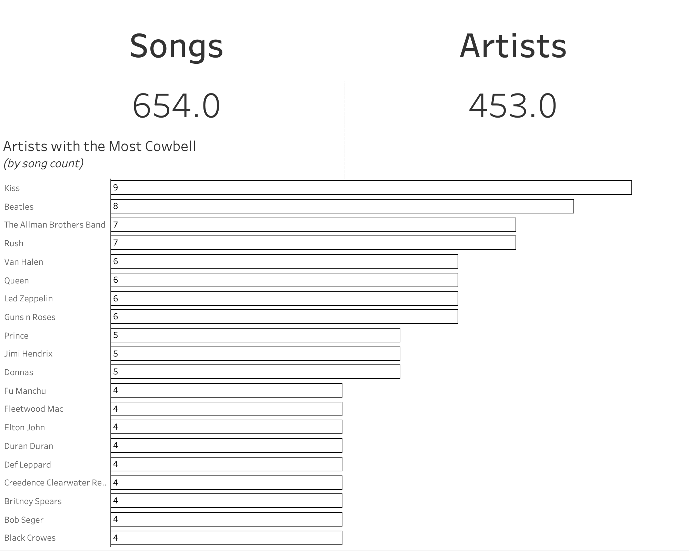

Caso 1: Songs with Cowbell
Fonte: Makeover Monday 2026 W40,
dados de cowbellsongs.com.
Pergunta: quais artistas mais usam cowbell nas músicas?
Original

Os totais aparecem com casa decimal, as barras não têm preenchimento e o ranking corta em 20 no meio de um empate (16 artistas têm 4 músicas e só 9 aparecem). Os totais também não batem com o arquivo, que tem 661 linhas, músicas repetidas e artistas escritos de formas diferentes.
Redesign A: cada música é um quadrado
Todos os 27 artistas com 4 ou mais músicas, sem cortar empates. Cada quadrado é uma música, passando o mouse aparece o nome dela. Os nomes repetidos foram corrigidos no DuckDB.
Redesign B: quantas músicas cada artista tem
Histograma do número de músicas por artista. Em laranja está a parte que o original mostra, a maioria dos artistas tem só uma música.